Hearthstone Rehberi - Bölüm 01 - İlk Bakış
Uzun zamandır böyle bir rehber yapmayı düşünüyordum. Aslında nereden başlayacağımı bilmiyorum, eğer lönk diye konuya atılırsam kusura bakmayın. Bu rehberi yapmamın sebebi tamamiyle bu oyunu gerçekten çok sevmemden ve Türkiye’den daha fazla oynayan kişi görme isteğimden kaynaklanıyor.

Hearthstone Blizzard tarafından çıkarılmış bir tür dijital kart oyunu. Her bir karakter World of Warcraft evreninde yer alır, genellikle kendine has özellikleri ve gücü vardır. Blizzard da bunu görmüş ve demiş ki “yahu ben bir kart oyunu yapayım, dünyaya babamın hayrına dağıtayım” demiş (mi acaba?). Aslında öyle dememiş. İlk olarak bir grup Blizzard’daki programcının hobi amacı ile başlamış, sonrasında çok güzel bir fikir olduğu kanaatine varılınca oyunu piyasaya sürme kararı verilmiş. Şu an oyun içi satın alma cirolarına bakarak bile verdikleri en doğru karar olduğu görülmekte. Her neyse…
01. Basit Düzeyde Oyun Mantığı
Oyuna ilk başladığınızda 4 çeşit kart tipi görüyorsunuz. Bunlar; Minion (Yaratık), Spell (Büyü), Weapon (Silah) ve Hero (Kahraman) kartları. Sonuncusu olan Hero kartları Knights of the Frozen Throne eklentisi ile geldi. Oyunun Tutorial (eğitim) kısmında bu kartı görememeniz bu sebeple doğal. Her oyuncu kendisine bir kahraman seçip 30 Health (sağlık) ile oyuna başlar (özel bir durum olmaksızın maksimum sağlık kapasitesi 30’dur). İki taraftan ilk kim karşısındaki kahramanın sağlık puanını sıfıra düşürürse o taraf kazanır.
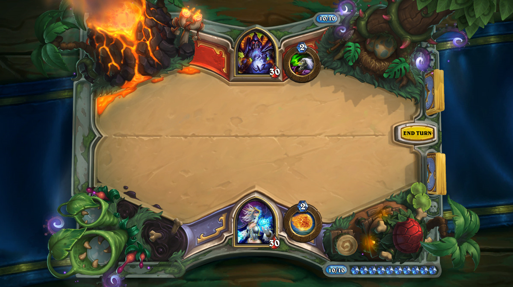
Ayrıca oyunda her biri farklı özelliklere sahip 9 adet Hero Class (Kahraman Sınıfı) bulunuyor. Bunlar; Warrior (Savaşçı), Hunter (Avcı), Rogue (Düzenbaz), Mage (Büyücü), Shaman (Şaman), Warlock (Kara Büyücü), Druid (Rahip), Priest (Şifacı) ve Paladin (Şövalye) sınıflarıdır.
02. Hero Power Mekaniği
Her bir kahraman sınıfının (özel bir durum olmadığı müddetçe) tur başına bir defa kullanabildiği bir Hero Power (Kahraman Gücü) vardır. Bu kahraman gücünün bedeli tur içerisinde (özel bir durum olmadığı müddetçe) 2 Mana’dır. Sırasıyla;
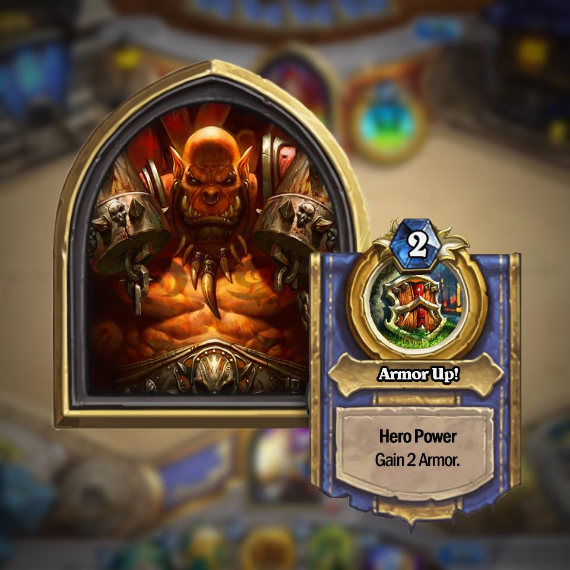
Warrior - Armor Up!: Kendisine 2 zırh verir. Zırh, kahramanda Health (can) ile aynı mantıkta işleyen fakat maksimum can kapasitesi gözetmeyen bir özelliktir. Özel durumlarda zırhlar özel kartlarla kombinasyon halinde kullanılabilir.
Hunter - Steady Shot: Rakip kahramana 2 hasar verir. Diğer karakterlere hasar veremez.
Rogue - Dagger Mastery: Kahraman 1 hasar ve 2 dayanıklılığa sahip bir silah kuşanır. Elde başka bir silah varsa onun yerine geçer. Silah güçlendirme kartları ile güçlendirilebilir.
Mage - Fireblast: İstenilen bir karaktere 1 hasar verir. Dost veya düşman birime kullanılabilir.
Shaman - Totemic Call: 4 çeşit totemden rastgele birini istif olmayacak şekilde çağırır. Bu totemler; Healing Totem (tur sonunda tüm dost yaratıklarına 1 can verir, 0 hasar ile 2 cana sahiptir), Seaing Totem (1 hasara ve 1 cana sahiptir), Stoneclaw Totem (Taunt -üzerine çekme- özelliğine ve 0 hasar ve 2 cana sahiptir) ve Wrath of Air Totem (+1 büyü hasarlarını arttırır, 0 hasar ve 2 cana sahiptir) totemleridir. Çağırılan totemler “Totem” yaratık sınıfına üyedirler ve bu sınıfa özel bütün güçlendirmeleri ve desteklemeleri alabilirler. 4 totemin hepsi çağrılmışsa beşinci totem çağrılamaz.
Warlock - Life Tap: Desteden bir kart çeker ve kendisine 2 hasar verir. Oyunda kart çekme mekaniği çok önemli ve güçlü olduğundan dengelemek açısından kullanan kahramanın 2 hasar görmesi durumu oyunun beta programından sonra eklenmiştir.
Druid - Shapeshift: 1 zırh ve içinde bulunduğu turda kullanılması için 1 hasar gücü verir. Kazanılan zırh bir sonraki turlara devreder fakat hasar devretmez.
Priest - Lesser Heal: Bir karaktere 2 heal (sağlık puanı) verir. Bu sağlık puanı karakterin maksimum sağlık puanı üzerinde bir etki etmez. Genellikle yaralı dost birimleri üzerinde kullanılır. Dost veya düşman birime kullanılabilir.
Paladin - Reinforce: Sahaya 1 hasar ve 1 cana sahip Silver Hand Recruit çağırır.
03. Kartlar Hakkında
Oyunda silah ve yaratık kartlarını tanımlamak için “saldırı gücü/sağlık puanı” şeklinde kısaltma bir yazım vardır. Örneğin; “Equip a 5/2 weapon” yazısı, kahramanın 5 saldırı gücünde, 2 dayanıklılığa sahip bir silah alacağını gösterir. Ya da “Summon 1/1 Boar” yazısı ilgili kartın 1 saldırı gücü ve 1 sağlık puanına sahip bir yaratık yaratacağını göstermektedir.

Oyun içerisinde oyuna hiçbir etki etmemesine karşın 2 tip kart vardır. Bunlar; sıradan ve Golden (altın) kartlardır. Golden kartlar animasyonlu, sıradan kartlar animasyonsuzdur. Kartın altın veya sıradan olması oyuna etki etmemektedir. Oyun içerisinde kartlara 2 şekilde sahip olunabilir. Bunlardan ilki, oyun içerisinde oyun parası ya da gerçek para ile alınabilen Pack (paket) alımıdır. Her paketten 5 adet kart çıkar. Her bir paketteki 5 karttan en az biri Rare ya da daha üst kalitede olmak zorundadır. Ayrıca oyunda ilgili Expansion’a ait ilk 10 paketten birinde Legendary kalitesinde kart çıkma zorunluluğu vardır. Ve ayrıca (ilk 10 paket haricinde) her 10 pakette 1 adet Epic, her 40 pakette 1 adet Legenday çıkma zorunluluğu vardır. Bu durum Journey to Un’goro genişleme paketi ile birlikte “Pitty Timer” isimli küçük bir düzenleme ile oyuna gelmiştir. Bu sayede benim gibi şansız oyuncuların bile Legendary çıkarmama durumu ortadan kalkmış, oyuna daha da bir eşitlilik gelmiştir. Her pakette çıkan bir Legendary kartı elinizde bulunuyorsa aynısı çıkmaz. Bu da Pitty Timer ile birlikte gelen güzel bir özellik. Çünkü aynı Legendary karttan 3 tane koleksiyonda olup da diğer Legendary kartlardan eksiklerin olması kadar can sıkıcı bir durum daha yok zannımca.
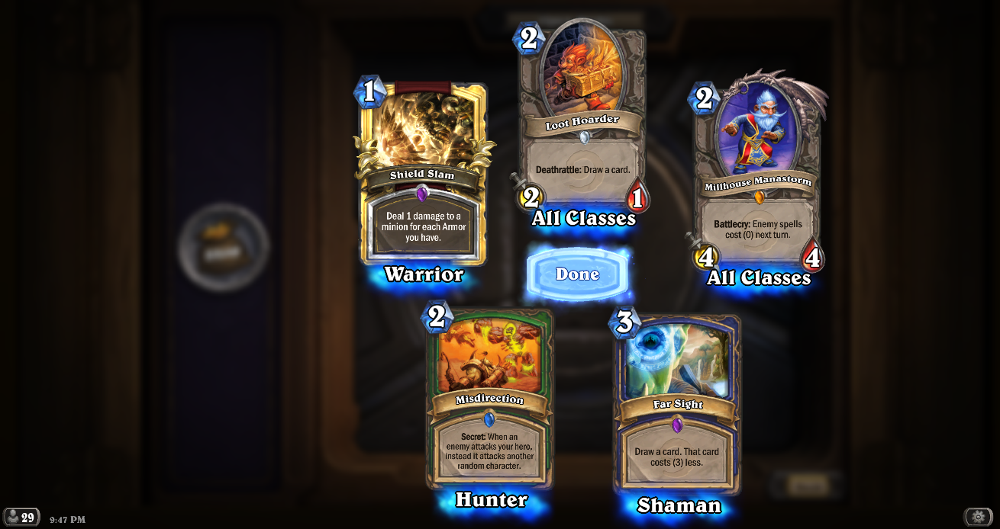
Diğer durum ise Dust (kum) ile kart yaratma durumudur. Kartlar değerlerine göre Dust’a dönüştürülüp yaratılabilir. Kart yaratma, kartı Dust’a dönüştürme işleminden daha maliyetlidir. Kartların orta kısmında değerlerine göre enderlik durumlarının bulunduğu bir taş bulunur. Bunlar;
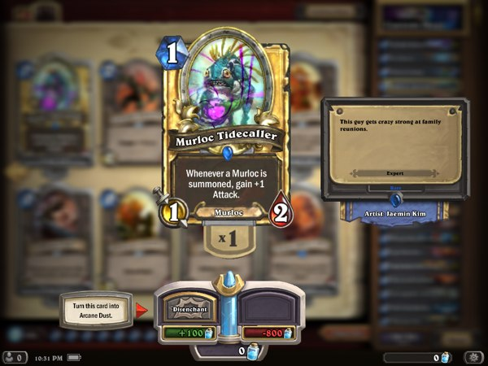
Basic - Temel: Ortasında taş bulundurmayan, oyunun sizin koleksiyonunuza ilk olarak verdiği temel kartlardır. Her kahraman için seviye 10’da bütün temel kartlar açılır. Bu kartlar Dust’a dönüştürülemez.
Common - Yaygın: Ortasında beyaz taş bulunduran, çıkma ihtimali %71.5 olan kartlardır. Yaratma maliyeti: 40(sıradan), 400(golden) dust. Dönüştürme kazancı: 5(sıradan), 50(golden) dust.
Rare - Nadir: Ortasında mavi taş bulunduran, çıkma ihtimali %23 olan kartlardır. Yaratma maliyeti: 100(sıradan), 800(golden) dust. Dönüştürme kazancı: 20(sıradan), 100(golden) dust.
Epic - Destansı: Ortasında mor taş bulunduran, çıkma ihtimali %4.5 olan kartlardır. Yaratma maliyeti: 400(sıradan), 1600(golden) dust. Dönüştürme kazancı: 100(sıradan), 400(golden) dust.
Legendary - Efsanevi: Ortasında turuncu taş bulunduran, insanların paketten çıkınca çığlık attığı, bazı oyunlarda dengeleri ciddi manada değiştiren, çıkma ihtimali %1 olan kartlardır. Yaratma maliyeti: 1600(sıradan), 3200(golden) dust. Dönüştürme kazancı: 400(sıradan), 1600(golden) dust.
Kartların enderlik durumları reelde oyunlara aşırı bir etki etmemektedir. Örneğin; Bonemare kartı Common değerinde olmasına karşın Epic kartlardan daha çok tercih edilip çoğu meta destesinde bulunmaktadır (meta olayına ileride değineceğiz). Bir destede 30 kart bulunmak zorundadır. Bu 30 kart içerisinde Legendary kartları hariç her karttan ikişer adet bulunabilir. Sadece Legendary kartları destede bir adet bulunabilir, daha fazla bulunamaz.
04. Mana Crystal Mekaniği
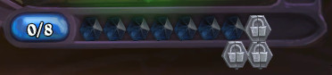
Oyun birinci tur için bir mana olmak üzere size her tur için birer tane Mana Crystal verir. Oyun içerisinde Mana Crystal üst sınırı 10 Mana Crystal ile sınırlıdır. Her kart oynamanız gerektiğinde bulunduğunuz turdaki Mana miktarınız boyutundaki kartı sahaya sürebilirsiniz. Bu mekanik, oyunda büyük kartlar kadar küçük kartların da oynanması ve oyun içerisinde ilk başlayan - ikinci başlayan dengesi için düşünülmüş bir mekaniktir. Sürekli büyük ve güçlü kartları destenize koyarsanız, oyun başı ortaya kart süremediğiniz için rakibiniz sizi ihtiyacınız olan mana miktarına ulaşamadan küçük kombinasyon kartları ile oyunu bitirmesi kaçınılmaz. Oyun başlangıcında eğer elinizde o turda oynayabileceğiniz miktardan büyük kartlar varsa kart oynamadan “End Turn” (turu bitir) butonuna basarak sonraki tura geçebilirisiniz. Eğer oyuna ikinci olarak başlıyorsanız, rakibinizin avantajını dengelemek amacıyla oyun size bir “The Coin” adında kart ve bir de destenizden ekstra kart verir. The Coin, size bir turluğuna bulunduğunuz mana kapasitesinden 1 mana daha fazla olan kapasitede oyun oynama hakkı sunar. Bazı oyunlarda (özellikle Rogue oyunlarında) önemli bir karttır. (Tavsiye: “Use wisely”)
05. Oyun Kuralları ve Oyun Sahası (Board) Hakkında
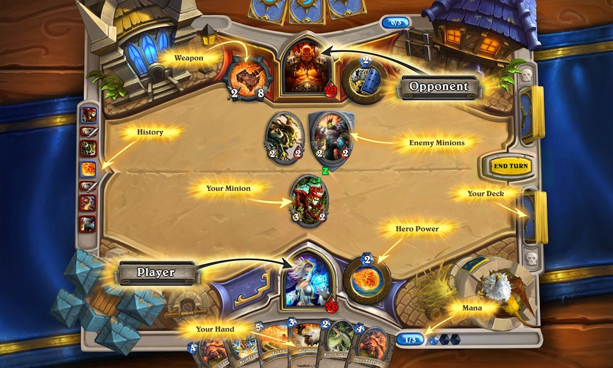
Oyunda her tur maksimum 75 saniye sürmektedir. 75 saniyenin son 20 saniyesinde Burning Rope Fuse (zaman sayacı) devreye girer. Zaman sayacı bitmesine karşın hiçbir şey yapılmazsa sonraki tur zaman sayacı süresi, bir kart oynayana kadar 7 saniyeye düşer. Genellikle oyuncunun oyundan düşmesi sonrası bu durum görülür. Ayrıca oyun 89 turdan daha fazla olamaz (1:siz, 2:rakip, 3:siz gibi). 89 tur süren oyunlarda 90’ıncı tura girildiğinde her iki oyuncuyu da oyun mağlup ilan eder. Fakat bu çok nadir görülen bir durumdur. Çünkü ilk başlayan oyuncunun 53’üncü turda destesinde kart kalmaması ve maksimum 65’inci turda mağlup ya da galip gelmesi durumu gerçekleşir. Destesindeki tüm kartları çekmiş olan oyuncu, her tur için Fatigue (Ceza) hasarı alır. Fatigue her tur için 1 hasardan başlayıp birer birer artarak devam eder (sonraki tur 2 hasar, daha sonra 3 hasar gibi). Bir deste 30 kart ile başlar. Özel durumlarda daha fazla karta sahip olunabilir. Özel durumlar olmasına karşın bu destedeki kartların sayısı 60’ı geçemez. Oyun esnasında bir oyuncu elinde maksimum 10 kart tutabilir. 11’inci kartı çekmek istediğinde o kart her iki oyuncuya da gösterilerek yok olur. Fazla çekilmeden kaynaklı kartın yok olması Discard (elden çıkarma) ya da Resurrect (yeniden diriltme) mekaniklerine etki etmez. Oyun sahasında her oyuncunun kendi bölgesi için 7 yaratık kartından fazlası duramaz. Özel Deathrattle (ölünce çalıştırma) kartları bazı durumlarda fazladan sahaya yaratık verebilmekte. Eğer sahada 7 yaratık halihazırda varsa, ölüm sonrası sadece 1 yaratık sahaya gelebilir, diğer yaratık gelmez. Bazı özel kartlar yaratıkları rakibin eline yeniden geri verebilir. Eğer oyuncunun elinde 10 kart varsa ve rakipten bu tip bir kartı görmüşse, oyuncunun eli dolu olduğundan o kart ölür ve Discard çalışmasa bile Deathrattle çalışır.
06. Yaratık Kartları
Saldırı ve sağlık puanı olan her kart yaratık kartıdır. Örneğin; oyun başında size verilen Murloc Raider kartını ele alalım. Sol üst kısmında o kartın oynanabilen mana değeri, sol altta vereceği hasar değeri, sağ altta ise alabileceği maksimum hasar yer almakta. Altta ortada yazan “Murloc” yazısı ise o yaratık kartının sınıfını göstermektedir. Murloc kartları ile etkileşime girebilen bir kart olduğu için özellikle belirtilmiştir. Bu tip sınıf kartları, kendi içerisinde güçlü sinerji oluşturduğu ve farklı destelerin ortaya çıkmasını sağladığı için Blizzard tarafından özellikle oluşturulmuştur ve bu tip sınıfların daha fazla olması için çaba gösterilmektedir. Bu yaratık kartı sınıflarını; Beast, Demon, Dragon, Elemental, Mech, Murloc, Pirate ve Totem sınıfları oluşturur. Sınıfların haricinde hiçbir sınıfa dahil olmayan kartlar da mevcuttur. Bu kartların alt kısmının ortasında hiçbir kelime yazmamaktadır. Her yaratık kartı oyuna sürüldükten sonra saldırmak için bir tur bekler. Charge özelliğine sahip kartlar bu durumdan hariç tutulur.
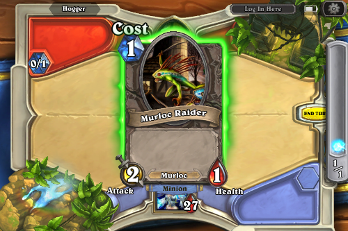
Oyun içerisinde yaratıkların takas edilme durumu şu şekilde gerçekleşir. Sahanızdaki yaratığın saldırı puanı, rakip sahadaki yaratığın sağlık puanından fazla ise onu yok edebilirsiniz. Rakip sahadaki yaratığın saldırı puanı eğer sizin saldırma emrini verdiğiniz yaratığın sağlık puanından fazla ise sizin yaratığınız da yok olacaktır. Aksi durum için, eğer saldırı puanınız rakip yaratığın sağlık puanından fazla değilse saldırı puanı kadar hasar verirsiniz. Aynı şey savunma yapan yaratık için de geçerli. Örneğin; Murloc Raider ile Chillwind Yeti kartına saldırdınız. Bu durumda Chillwind Yeti kartının 5(kendi sağlığı) - 2(Murloc Raider’ın saldırı gücü) = 3 canı kalacaktır. Ve Murloc Raider da aynı şekilde 1(kendi sağlığı) - 4(Chillwind Yeti’nin saldırı gücü) = -3 canı kalacak ve yok olacaktır.
07. Kart Mekanikleri
Aslında bu mekanikleri yaratık kartları bölümünde anlatacaktım fakat mekanikler sadece yaratık kartları ile sınırlı kalmadığı için bu şekilde ele almayı daha mantıklı gördüm. Hearthstone’da oyunun gidişatını değiştiren en etkili şey hiç şüphesiz kartların sahip olduğu mekaniklerdir. Bunlar;
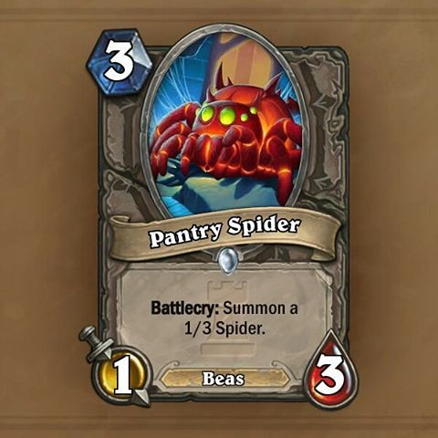
Battlecry (Savaş Narası): Kart ilk sahaya sürüldüğünde gerçekleşecek aksiyondur. Kart sahaya sürüldüğü andan itibaren kartın üzerinde yazan eylemi gerçekleştirir. Sahaya sürüldükten sonra eğer aksiyon gerçekleşmemişse iptal edilebilir.
Deathrattle (Ölünce Çalışır): Sahaya sürdüğünüz kartın yok olduğunda gerçekleştireceği aksiyondur.
Charge (Anında Saldırı): Yaratık kartını sahaya sürdüğünüz gibi saldırı yapabilmenizi sağlar.
Adapt (Adaptasyon): Sizin karşınıza çıkan 3 opsiyondan birisini seçmenizi ister ve ona göre özellikler alır. Opsiyonlar rastgele gelmektedir. Opsiyonlar; Divine Shield | +3 Attack | Deathrattle: Summon two 1/1 Plants | Windfury | Can’t be targeted by spells or Hero Powers | Taunt | +1/+1 | +3 Health | Stealth until your next turn | Poisonous.
Choose One (Birini Seç): Karşınıza çıkan opsiyonlardan birisini seçmenizi ister. Genellikle Druid sınıfı kartlarında görülmektedir.
Choose Twice (İki Defa Seç): Karşınıza çıkan opsiyonlardan birisini 2 defa seçmenizi ister. Genellikle Druid sınıfı kartlarında görülmektedir.
Combo (Kombo): Öncesinde bir kart oynanması gereken aksiyon kartıdır. Eğer öncesinde bir kart oynanmazsa Combo kısmında yazan özellik aktif olmayacaktır. Genellikle Rogue sınıfı kartlarında görülmektedir.
Discard (Elden Çıkarma): Elinizde bulunan kartlardan istenilen sayı kadarını rastgele elden çıkartır ve o kartları yok eder. Genellikle Warlock sınıfı kartlarda görülmektedir.
Divine Shield (Dokunulmazlık Kalkanı): Rakipten gelen ilk hasarı yoksayan bir kalkana sahip yaratık kartlarıdır. Poisonous hasar türü kalkanı delemez. Direkt yok eden yaratık kartları ya da büyü kartları kalkanı delebilir.
Discover (Keşfet): Karşınıza çıkan 3 karttan birisini seçmenizi ister ve onu elinize ekler.
Enrage (Öfkelenme): Yaratık hasar aldığında üzerinde yazan aksiyonu gerçekleştirir. Eğer yaratık tekrar sağlık puanı maksimum puanına dönerse (örneğin priest tarafından Heal kullanılırsa) Enrage özelliği kaybolur.
Immune (Dokunulmaz): Immune özelliği aktiften karakter hiçbir şekilde büyü ya da saldırı hasarı almaz. Direkt yoketme büyüleri ve yaratıkları da işe yaramaz.
Inspire (Hero Power Kullanıldığında): Hero Power kullanıldığında ilgili aksiyonu gerçekleştirir. En son The Grand Tournament eklentisi ile oyuna girmiş olan mekanik daha sonra diğer Expansion’larda nedense pek kullanılmadı.
Lifesteal (Can Çalma): Verilen hasar kadar sağlık puanını kahramana geri döndürür.
Overload (Aşırı yüklenme): Üzerinde yazan miktar kadar Mana Crystal’i sonraki turda bloklanır. Genellikle Shaman sınıfı kartlarda görülmektedir.
Poisonous (Zehirleme): Kahraman harici hasar verdiği bir yaratığı anında öldürür. Eğer yaratıkda Divine Shield varsa etki etmez.
Recruit (Toplama): Destedeki bir yaratığı sahaya çağırır. Kobolds and Catacombs Expansion’u ile birlikte gelmiştir.
Silence (Susturma): Bir yaratığın özelliklerini ve o zamana kadar almış olduğu bütün yükseltme özelliklerini susturur ve yok sayar.
Spell Damage (Büyü Hasarı): Kullanılan Spell kartlarına ait büyü hasar miktarını arttırır.
Stealth (Görünmez): Karakterin görünmez olmasını ve saldırı yapmadıkça da görünmez kalmasını sağlar. Bazı kartlar sadece bir tur görünmezlik sağlar.
Summon (Çağırma): Aksiyon kartı sahaya bir yaratık çağırır. Summon kartlarının üzerinde genellikle ne özelliğe sahip yaratıkların çağırılacağı yazmaktadır.
Taunt (Üzerine Çekme): Sahaya sürüldüğünde rakip yaratıkların diğer karakterlere hasar vermesini önler. En azından kendisi ölene kadar önler diyelim.
Transform (Dönüştürme): Sahadaki bir yaratığı başka bir yaratığa dönüştürür. Bu dönüştürme esnasında yaratığın kazandığı bütün yükseltme özellikleri silinecektir.
Windfury (Fazladan Saldırı): Bir tur içerisinde 2 defa saldırmasına olanak tanır. Aynı karaktere ya da farklı karakterlere saldırabilir.
Actions (Aksiyonlar): Oyundaki yaratığın altında elektrik simgesi ile gösterilen, bir durum olduğunda bir etkileşime gireceğini belirten mekaniktir. Bunlar yazılı olarak ifade edilir. Bazıları tur sonunda bazıları ise tur başında bazıları ise bir olay gerçekleştikten sonra gerçekleşir. Örneğin; Doomsayer bir sonraki turun başında sahadaki bütün kartları yok eder. Bu tip kartlar için özel bir mekanik ismi tanımlanmadığından Actions adıyla geçiştirdim.
And Others (Ve Diğerleri): Aslında başka mekanikler de var. Örneğin Freeze, Elusive, Permanent gibi… Fakat bunlar özel bir mekanik isminden çok bir kartın açıklamasındaki cümlede uzun uzadıya yazılan açıklamalar olduğu için bunlara pek girmeyeceğim.
08. Büyü Kartları
Büyü kartları (Spell Cards) tüm sınıflar için vazgeçilmez olan ve en sıkışılan anda kurtaracak olan kartlardır. Karşıdaki 8/8’lik yaratığı 1/1’lik bir kuzuya dönüştürmeyi kim istemez.
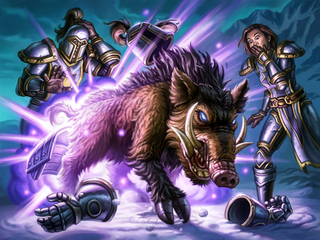
Büyü kartları bazı durumlarda rakibin turunda aktifleştirmek üzere kullanılabilir. Bu tip büyü kartlarına Secret (tuzak) kartı denir (secret tuzak diye çevrilmez, biliyorum fakat en uygun tanım aslında bu). Tuzak kartları rakibin oynadığı bir kart üzerine aktifleşir. Sahada olan bir tuzak kartı yeniden oynanamaz. Yeniden oynanabilmesi için o tuzağın öncelikle aktifleşmesi gerekmektedir. Şu an için Mage, Hunter, Paladin ve Rogue sınıflarında secret kartları bulunmaktadır. Diğer sınıflarda secret kartları bulunmamaktadır.
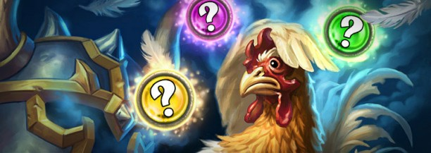
Bazı durumlarda ise büyü kartı size bir görev verir ve görevin sonunda size bir ödül verir. Bu tip büyü kartlarına da Quest (görev) kartı denir. Quest kartları Legendary tipi kartlardır.
Büyü kartları hasar verme, yaratık güçlendirmesi, tuzak kurma, görev yapma gibi durumlarda kullanılabilir. Farklı büyü kartı türevleri de mevcuttur. Örneğin elde tutulduğunda Upgrade edilebilen spelstone kartları gibi bazı fantastik kartlar da vardır. Fakat bu maddede bu konulara çok fazla değinmek gerekmediği kanaatindeyim. Tüm büyü kartlarının üzerinde hangi aksiyonları gerçekleştireceği yazılıdır. Diğerleri için İngilizce’nize kuvvet anlayacağınız…
09. Silah Kartları
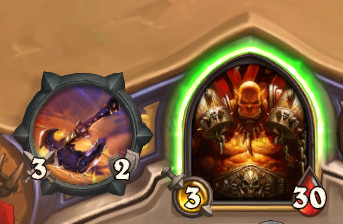
Kahramanı saldırı modunda oyuna sokan, tur bekletmeden (Charge özelliği gibi) saldırı yapmanıza imkan sağlayan kartlardır. Saldırı puanları ve dayanıklılıkları vardır. Silahın yok edilmesi için dayanıklılığın dolmuş olması ya da silahı yok eden bir kartın sürülmüş olması gereklidir. Silahlar bir takım yükseltmeler alabilir. Hasar gücü ya da dayanıklılığı arttırılabilir. Ele alınması herhangi bir şekilde engellenemez. Kontrol oyunlarında önemli rol oynarlar.
10. Kahraman Kartları
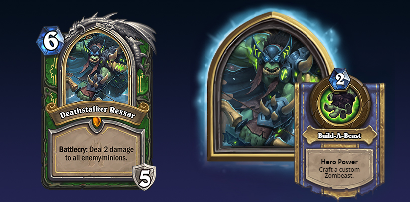
Knights of the Frozen Throne Expansion’u ile birlikte çıkmış olan kartlardır. Hero kartları, kahramanın mevcut Hero Power’ını değiştirir, extra armor verir ve Battlecry, Stealth gibi özelliklere sahip olabilirler. Bazı durumlarda ciddi manada oyun çehresini değiştirirler. Blizzard size Knights of the Frozen Throne macerasının Prologue aşamasını tamamladığınızda rastgele bir sınıfa ait bedava bir Hero Card verir. Hero kartı kullanımı Tutorial kısmında gösterilmez.
11. Oyun Modları
Oyun kendi içerisinde temelde 2 tane mod bulundurmaktadır. Gerçek oyunculara karşı ve bilgisayara karşı. Fakat oyuna ilk defa karakter açan oyuncular için bir Tutorial (eğitim) modu da bulunmaktadır. Tutorial modunda 6 adet boss ile mücadele verirken aynı zamanda oyunun mekaniklerini öğrenmeniz sağlanır. 6 boss arasından herhangi birisine yenilirseniz o boss ile oyun yeniden başlar ve size sonraki oyunda onu yenmeniz için bir ipucu verir. Gerçek oyunculara karşı 2 mod mevcuttur. Wild ve Standart mod. Bu oyun modları yeni oyuncuların daha kolay oyuna adapte olmasını sağlamak için ikiye ayrılmıştır. Standart modda iki yıl öncesine kadarki tüm kartlar kullanılabilir, iki yaşından büyük kartlar kullanılamaz. Wild modda ise tüm kartların kullanımı serbesttir. Bu sebeple hiç görmediğiniz ve hiç tanımadığınız kartları görmeniz gayet doğal bir durum. Standart modu ele alırsak gerçek oyunculara karşı oynanan oyunları sıralamak gerekirse;
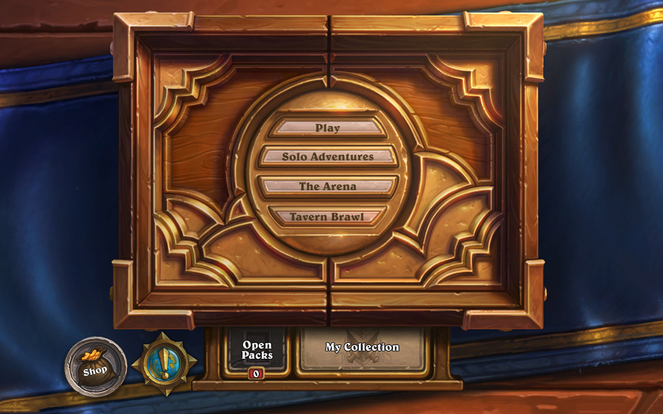
Play Mode (Casual): Gerçek oyunculara karşı dostane maçlar yapmanızı sağlayan bir moddur. Oyunda yenmeniz ya da yenilmeniz size bir yarar ya da zarar sağlamaz. Bu sebeple bu modda daha çok eğlence amaçlı Deck (kart destesi) yapanlar takılırlar.
Play Mode (Ranked): Gerçek oyuncularla sıralama maçlarını yapmanızı sağlayan bir moddur. Tepelere tırmandıkça ay sonunda Blizzard bir takım ödüller vermektedir. Ödülleri sadece Rank 20 ve üzeri oyuncular alabilmektedir. Bu arada rank sistemi artan değil, azalan bir eğilim izlemektedir. Yani Rank 1’deki oyuncu Rank 20’den daha iyidir (bayağı uçuk örnek oldu). Bunun haricinde Rank 1’i geçmeniz durumunda Legend Ranklara erişirsiniz. Legend Ranklar içerisinde ilk 100 oyuncunun ismi Blizzard’ın sitesinde her ay yayınlanır. Her 20 - 15 - 10 - 5 - Legend Rank’ları için millstone sahibi olursunuz ve bu ranklardan aşağı ay sonuna kadar yenilseniz dahi düşemezsiniz. Ayrıca 20’inci Rank’a erişene kadar yine Rank düşemezsiniz.
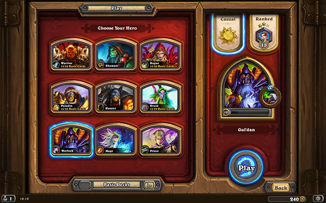
Arena: 150 gold ya da gerçek para ile giriş yapıp Blizzard’ın sizin için özenle kriz etmek için seçtiği 3 tane karttan birini seçerek oluşturduğunuz destenizle diğer oyunculara karşı maçlar yapmanızı sağlayan bir moddur. Her rakibi yendiğinizde ödül sandığınızı geliştirirsiniz. Sandığın içerisinden Kart paketi, Dust, Gold ve Kart çıkabilmektedir. Ne kadar çok insan elerseniz o kadar iyi bir ödüle sahip olursunuz. Bir Arena Run’ı içerisinde 3 defa yenilme hakkınız var. Maksimum galibiyet ve büyük ödüle ulaşmak için gereken rakip eleme sayısı 12 kişidir. Fakat bunun çok zor bir iş olduğunu belirtmekte fayda var.
Tavern Brawl: Blizzard tarafından her hafta yapılan, eğlence amaçlı, ilk kazandığınız maçta bir adet kart paketi hediye eden diğer oyuncularla oynamanızı sağlayan oyun modudur. Sadece ilk kazanılan oyunda hediye paketi verilmektedir. Diğer oyunlar tamamiyle eğlence amaçlıdır. Hatta bunu öyle çok kişi sormuş ki, Blizzard oyun içerisinde “Win to Tavern Brawl is not reward additional card packs. It’s just for fun.” diye açıklama ihtiyacı hissetmiş.
Oyun içerisinde bu tip gerçek oyuncuların haricinde oyunun yapay zekasına karşı oynanan oyunlar da mevcut.
Pratice Mode: Bu modda Normal ve Expert botlara karşı oyunlar oynayabilir, yaptığınız desteleri deneyebilir, hızla kahramanlarınızı 10’uncu seviyeye getirebilirsiniz. Normal ve Expert moddaki tüm botları yendiğinizde size 200 gold ödül verecektir. Botları yen, 200 gold’u kap. Ne güzel değil mi?
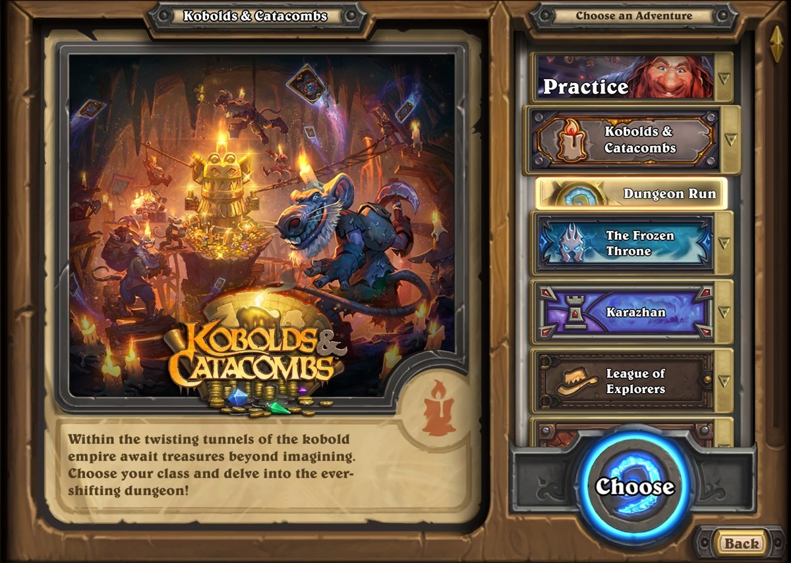
Adventures: Oyun içerisinde gerçek para ya da oyun parası ile satın alma yoluyla oynayabileceğiniz maceralar bulunuyor. Ödül olarak da çoğu oyuncunun meta destelerde kullandığı güçlü kartları oluyor genellikle. Ayrıca Heroic modu tamamladığınızda size özel bir kart arkası görünümü de hediye ediyor.
Dungeon Run: Kobolds and Catacombs ile hayatımıza giren özel bir mod. Bu mod sayesinde sırayla tüm Boss’ları yenmeye çalışırken diğer yandan da bize sunduğu kartların güçlü olması sebebiyle en eğlenceli anlara tanık olabiliyoruz. Final Boss’a karşı oyunu ikinci turda bitirenler mi dersin, Boss’un 1 canı kala yenilip kriz geçirenler mi dersin hepsi burada. Oyunu tüm sınıflar için tamamladıktan sonra özel bir kart arkası görünümü hediye ediyor Blizz’ciğim.
Biliyorum, biraz uzun oldu. Hiç okumadım gerçi ne yazmışım. Uzun olduğunu saat 22:12’de başladığım bu yazının saat 02:34 olmasına rağmen hala yazmaya devam etmemden anladım. Daha bunun link düzeltmeleri var, üzerinden geçmesi var, ohooo… Oyuna temel bir giriş yapmış olduk zannımca. Neyse, sonraki yazılarda daha bahsederim bu güzel oyun ile ilgili düşüncelerimden.
Afiyet olsun.
Edit: Bu yazıyı bir gün sonrasında resimler ekleyip, kontrol edip, okuyup, MAŞAALLAH çekip yayınlıyorum. Saat bu sefer 03:17, ben bunu neden yapıyorum ki diye sorguladığım saatlerdeyiz. Yatmadan önce tüm insanlara akıl, fikir, sevgi ve saygı diliyorum. Esen kalın…